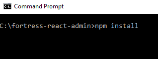
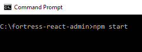
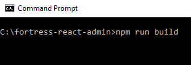
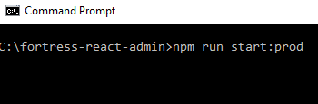

Fortress React Admin Web Template
User Guide
Getting started
Start by installing node.js
- Node.js version 8 or higher
- npm version 5 or higher
unzip the files you get when you buy the Fortress React Admin Web Template
Open a command windows and navigate to fortress-react-admin folder
-
run the command npm install

Start the app in development mode
-
run the command npm start
 - open your web browser and navigate to http://localhost:3000
Build production app
-
run the command npm run build
 - go to fortress-react-admin/build folder and you will find the production files generated
Start the app in production mode
-
run the command npm run start:prod
 - open your web browser and navigate to http://localhost:3000
Documentation
- Reading the hitchhikers guide react-boilerplate online documentation, will help you understanding the core components of this template.
- Go to fortress-react-admin/docs folder in your template to find offline documentation for css, js, testing, CLI and more. You can read it online too, right here.
- material-ui documentation online describes how to use the set of UI material components implemented for this template.
- Check the examples online for recharts components to build your charts.
- Check the examples online for react-table component.
- Check the examples online for react-infinite-scroller component.
Settings
- Go to fortress-react-admin/app/containers/App/reducer.js
- Set userIsAuthenticated to true or false in order to show or hide the login/sign up/forgot password. This state is handled in containers/App/index.js, you can use it to check if an user is authenticated.
- Set currentTheme to change theme color. String values: atom, aurelia, quiet, sky, default.
- Set openSettingDrawer to true or false in order to show or hide the right drawer.
- Set showTabs to true or false in order to show or hide navbar tabs.
- Set showOpenViews to true or false in order to show or hide open views section in left drawer.